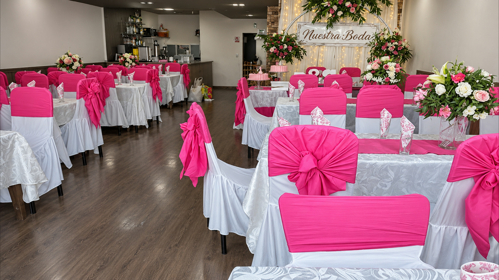
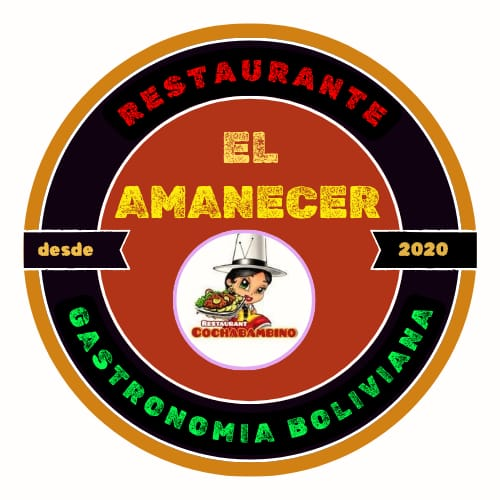
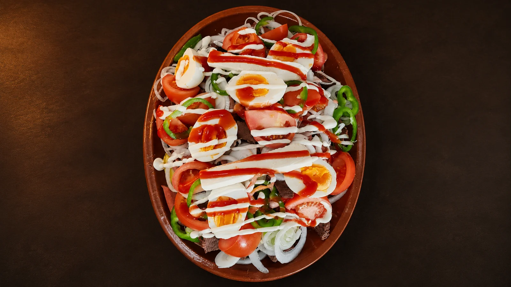
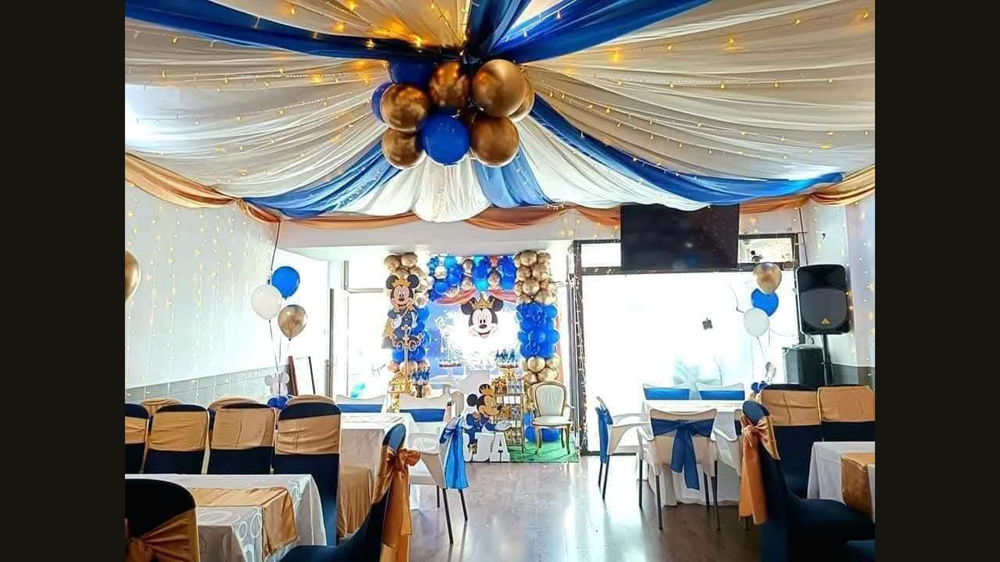
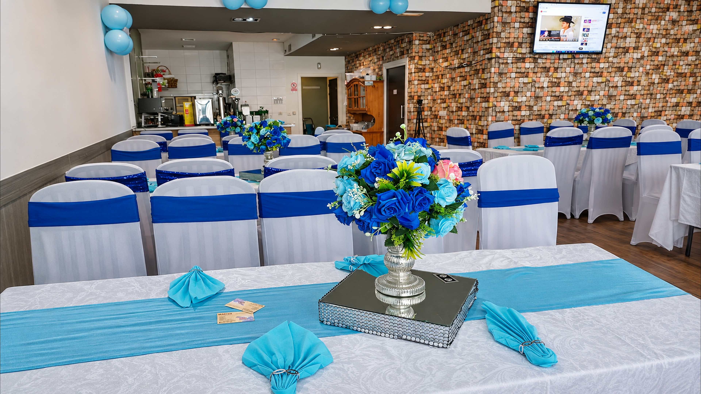

LOS GRANDES MOMENTOS
Bodas y encuentros familiares.
Una celebración para recordar, con la mesa y el ambiente preparados para tu gente.

El AmanecerGASTRONOMÍA BOLIVIANA · DESDE 2020HAY SABORES QUE NOS REÚNEN.
Una mesa generosa. Nuestra cocina de siempre.
Y mil motivos para celebrar juntos.

LA TRADICIÓN SE SIRVE A LA MESA.
El sabor de un plato que reconoces. La conversación que se alarga. Las ganas de volver a reunirse.
En El Amanecer, la cocina boliviana y los encuentros van de la mano: del almuerzo de cada día a esa ocasión que merece una mesa especial.
Encuentra tu motivo para celebrar ↘01 / LA ESENCIA DE EL AMANECER
Cocina de raíces bolivianas.
Una mesa abierta en Leioa.
Platos para compartir, recetas que nos acompañan y un ambiente donde sentirse cerca. Así se vive El Amanecer, desde 2020.
Conoce nuestros sabores02 / LOS SABORES
La carta completa, de las entradas a los especiales.
También nuestras bebidas y panadería.
Precios transcritos de la carta facilitada. Confirma vigencia, disponibilidad y alérgenos.
Prueba otro nombre o cambia de categoría.
Las fotos reales conservan su presentación. Las imágenes que faltaban se han creado como ilustraciones basadas en referencias gastronómicas y están identificadas. Receta, ración, disponibilidad y alérgenos se confirman con el restaurante.
03 / MOTIVOS PARA REUNIRSE
Hay días que piden una mesa más grande.
Cuéntanos qué quieres celebrar y lo preparamos contigo.

LOS GRANDES MOMENTOS
Una celebración para recordar, con la mesa y el ambiente preparados para tu gente.

HOY TOCA CELEBRAR
Reúne a los tuyos, brinda y deja espacio para los recuerdos que vienen después.

LA ALEGRÍA DE COMPARTIR
Encuentros sociales y celebraciones vinculadas a nuestras raíces bolivianas.
ASÍ SE VIVE EL AMANECER
La cocina, la música y el ambiente, en vídeos del restaurante.
Los vídeos conservan su formato vertical y están disponibles en 4K mejorado. La nitidez recuperable depende de los originales de WhatsApp; la exportación no convierte la grabación en 4K nativo. Las fechas de los carteles no son un calendario de próximos eventos.
LA MEJOR EXCUSA PARA VOLVER
04 / TU PRÓXIMO ENCUENTRO
Prepara una consulta para comer o celebrar con nosotros.
El restaurante te confirmará la disponibilidad al contactar.
05 / AQUÍ NOS ENCONTRAMOS
Av. Amaia, 2
Leioa · Bizkaia
Cerca del metro de Areeta.
Consulta el horario y la disponibilidad antes de venir.